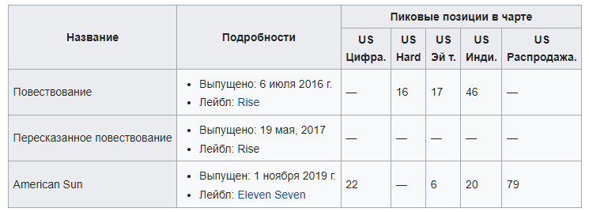
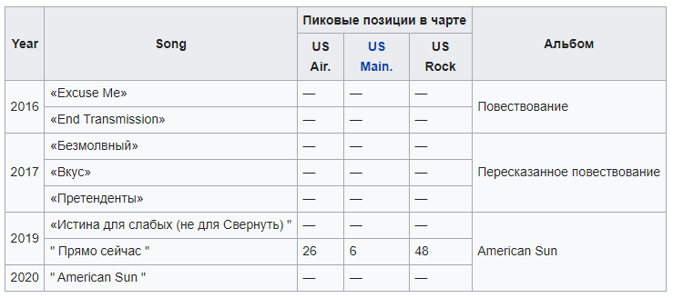

История
Fire from the Gods была сформирована в Остине, штат Техас, в 2010 году гитаристом Дрю Уокером,
ритм-гитаристом
Тони Эспарза, басист Боннер Бейкер, барабанщик Джадсон Кертис и вокалист Эрик
Джули собрались вместе после
местной битвы между группами. Их музыкальный жанр и влияние
описываются
как «смесь хип-хопа, металла и хардкора».
После ухода вокалиста Эрика Джули, гитариста Тони
Эспарзы
и барабанщика Джадсона Кертиса группа продолжила
работу в новом составе, в котором Джеймсон
Теат и Ричард Викандер заменили Эспарзу и Кертиса на ритм-гитаре и барабанах
соответственно.
Затем
А. Дж. Чаннер и Крис Мардис были наняты в качестве двух новых ведущих вокалистов, чтобы заменить
Эрика Джули. После ухода Мардиса в 2016 году Чаннер стал единственным ведущим вокалистом.
Группа впервые подписала контракт с Rise Records на их релиз 2016 года Narrative, спродюсированным
Дэвидом Бендетом.
Альбом содержал хит-синглы «Excuse Me» и «End Transmission» и затрагивал
такие
спорные темы, как расизм и злоупотребление
властью. В 2017 году группа выпустила переиздание
своего
альбома 2016 года Narrative под названием Narrative Retold с
добавлением двух новых песен, "The
Voiceless" и "The Taste", спродюсерами которых выступили Korn . Джонатан Дэвис . После
выпуска
Narrative Retold группа отправилась в тур с Born of Osiris , Volumes , Within the Ruins и Oceans
Ate Alaska.
В 2019 году группа подписала контракт с лейблом Eleven Seven гитариста Five Finger Death Punch
Золтана Батори и выпустила
свой второй альбом American Sun 1 ноября 2019 года. выпуск нового
сингла
"Truth To the Weak (Not Built To Collapse)", который
был выпущен 26 июля 2019 года. American
Sun,
как и Narrative, занимается такими проблемами, как политические беспорядки,
технологическая
перегрузка, политические разногласия и экологическая апатия. Одновременно с выпуском American Sun
группа
поддерживает Five Finger Death Punch вместе с Bad Wolves и Three Days Grace в туре,
который
начался с выступлений подряд в
The Joint в Hard Rock Hotel 1 и 2 ноября 2019 года.
Участники
- AJ Channer - ведущий вокал.
- Джеймсон Соски - ритм-гитара, бэк-вокал.
- Дрю Уокер - соло-гитара.
- Боннер Бейкер - бас-гитара.
- Ричард Викандер - ударные, перкуссия.
Бывшие участники
- Эрик Джули - ведущий вокал.
- Тони Эспарза - ритм-гитара.
- Джадсон Кертис - ударные, перкуссия.
- Крис Мардис - вокал.
Дискография
Альбомы
Синглы
Ссылки
!!!Для любителей реп-метала рекомендуется к прослушиванию!!!